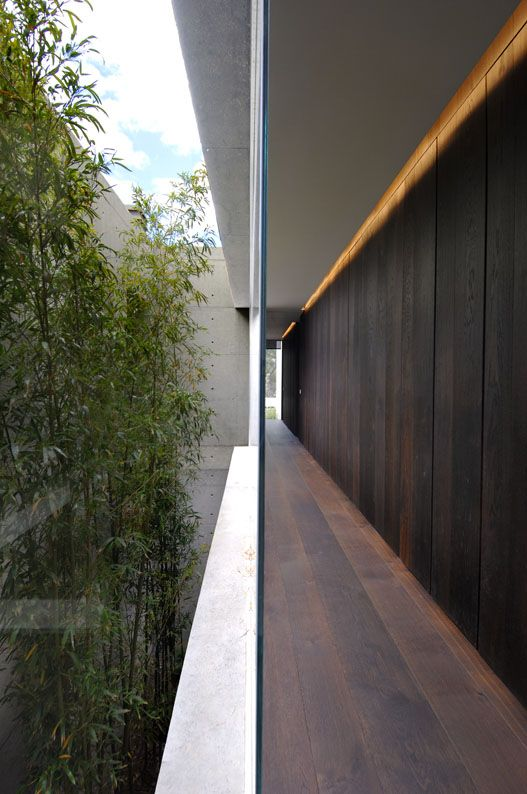
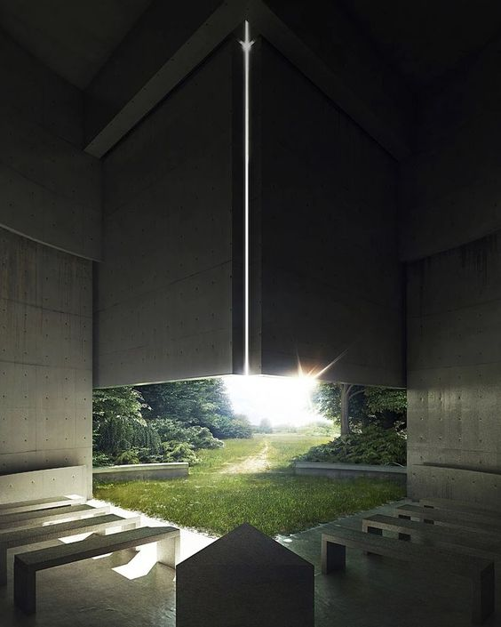

Projeto Minimalista, sendo uma dos nossos principais conceitos ao bem estar
pessoal, tal obra foi considerada mundialmente um projeto minimalista, que sólidifica os
sentimentos de pureza em forma fisica estática.

Projeto Misto
Sua combinação retrata o passado ancestral e o presente moderno, onde a arte influencia os
limites hormonais.

Lazer Fotografico
Lazer Fotografico, proporciona uma vista aconchegante para o cliente como
se fosse uma paisagem realistica com aromas, climas e majoritariamente viva.